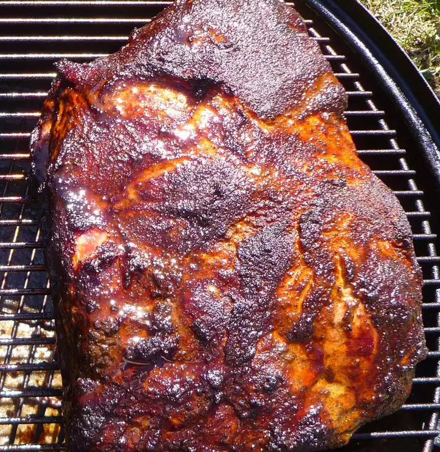

Smoked Pulled Pork

Description
Pork shoulder, being quite the fatty cut of meat, lends itself well to being slow cooked for an extra tender, tasty piece of meat.
with this in mind, we can use a smoker at low tempatures to cook the most tender, flavorful, and smokey bbq!
Ingredients
- 1 (8 pound) pork shoulder roast
- 1 quart apple cider, or as needed
- 5 tablespoons white sugar
- 5 tablespoons light brown sugar
- 2 tablespoons kosher salt
- 2 tablespoons paprika
- 1 tablespoon onion powder
- 1 tablespoon freshly ground black pepper
- 1 tablespoon garlic powder
- 3 cups hickory chips, or more as needed, soaked in water
- 1 onion, chopped
Instructions
- Place pork shoulder in a large pot and add enough apple cider to cover. Combine white sugar, brown sugar, salt, paprika, onion powder,
black pepper, and garlic powder in a bowl. Mix 1/4 cup of sugar rub into cider; reserve remaining rub. Cover the pot and refrigerate for 12 hours.
- Preheat the smoker to 210 degrees F (99 degrees C). Add enough wood chips to the smoker.
- Pour cider brine into the water pan of the smoker; add onion and 1/4 cup more sugar rub.
- Spread remaining sugar rub over pork shoulder. Transfer pork to the center of the smoker.
- Smoke pork until very tender or until it reaches an internal temperature of 200 degrees F (95 degrees C), about 8 hours.
Monitor hickory chips and liquid, adding more as needed.
- Transfer pork to a large platter and cool for 30 minutes before shredding with forks.